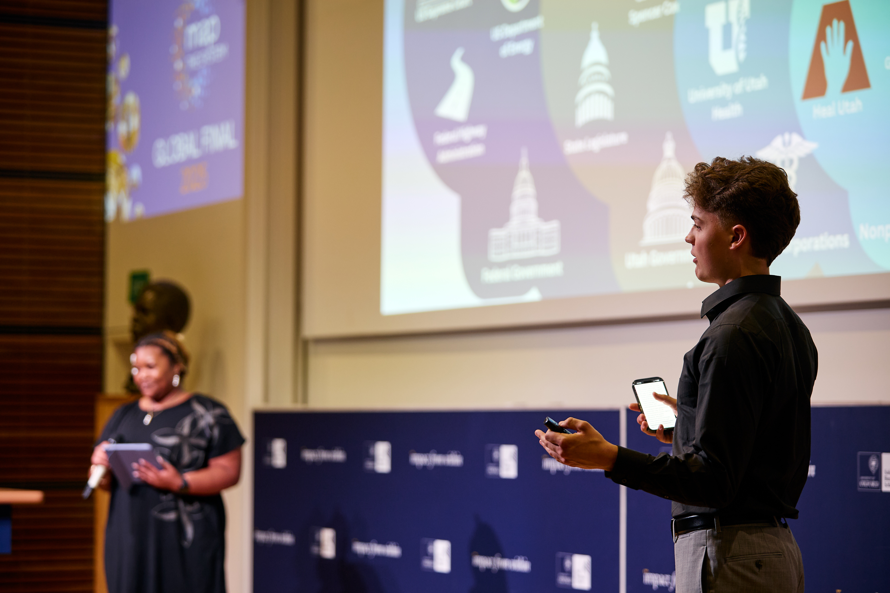
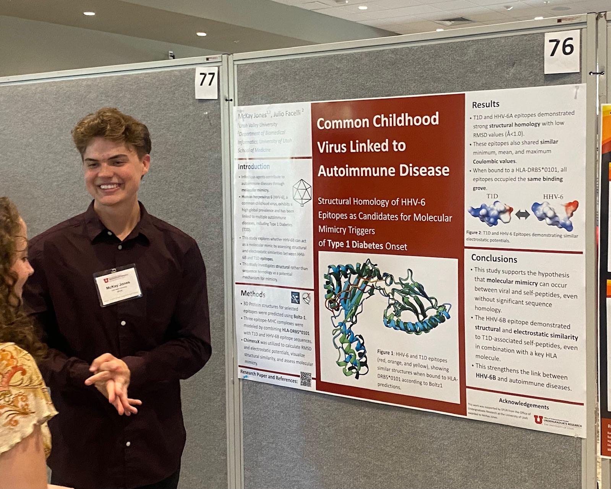
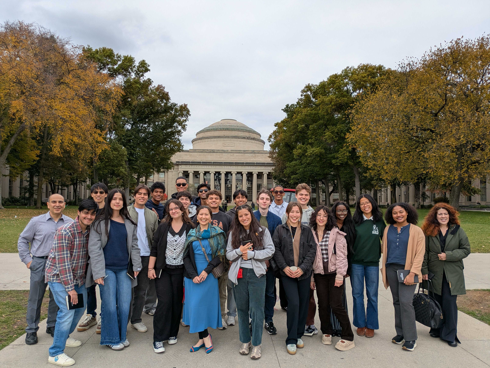
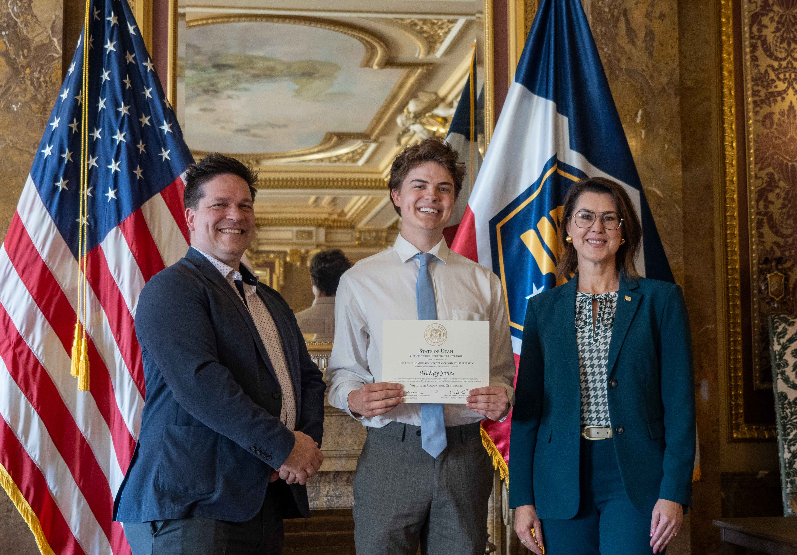
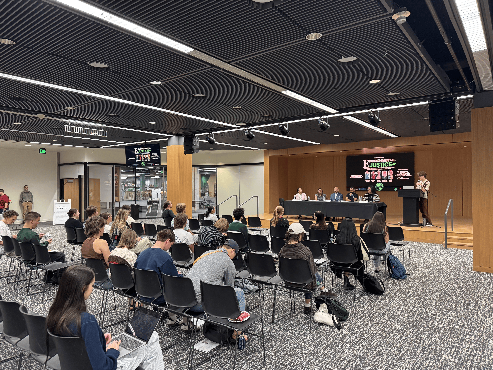
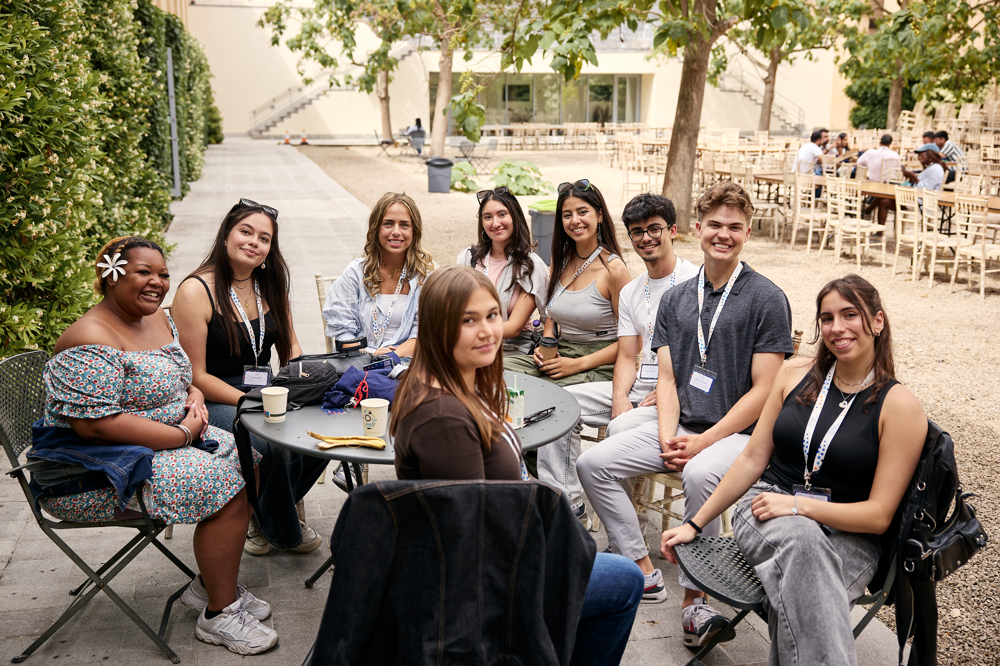
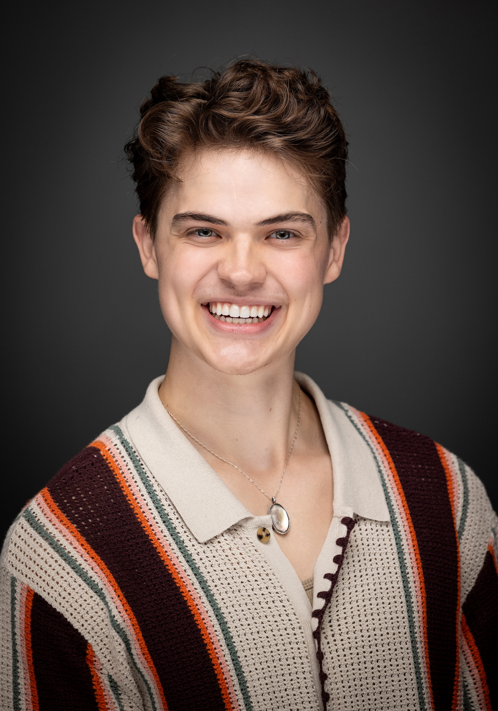

Presentations · Leadership · Research
Portfolio







Utah Valley University · Broad Institute
Bioinformatics · Population Genetics
I'm an undergraduate researcher studying bioinformatics at Utah Valley University, currently conducting population genetics research at the Broad Institute of MIT and Harvard. My work sits at the intersection of computational biology, genomics, and data-driven approaches to human health.

About
An undergraduate researcher drawn to the questions at the boundary of biology, computation, and data.
I'm a junior at Utah Valley University pursuing a degree in Bioinformatics alongside coursework in Political Science and Music, graduating with honors in May 2027. I currently conduct population genetics research at the Broad Institute of MIT and Harvard.
Previously, in Dr. Julio Facelli's lab at the University of Utah, I investigated the pathogenesis of autoimmune diseases — including type 1 diabetes mellitus — through molecular mimicry. Across these projects I build reproducible computational pipelines and enjoy translating messy biological data into clear, defensible answers.
Interests
At a glance
Population Genetics Research
Broad Institute of MIT & Harvard
B.S. Bioinformatics (Honors)
Utah Valley University · Expected May 2027
Molecular Mimicry & Autoimmunity
Facelli Lab · University of Utah
Selected Work
An investigation into the relationship between air quality and life expectancy across the United States, combining public health and environmental datasets into a reproducible analysis.
View projectIn Dr. Julio Facelli's lab at the University of Utah, I study the pathogenesis of autoimmune diseases — including type 1 diabetes mellitus — through molecular mimicry, examining structural homology between viral epitopes and human proteins as candidate disease triggers.
A set of study resources I built for students taking General Chemistry I at UVU, distilling core concepts into a focused, review-ready format.
Open resourcesPresentations · Leadership · Research





